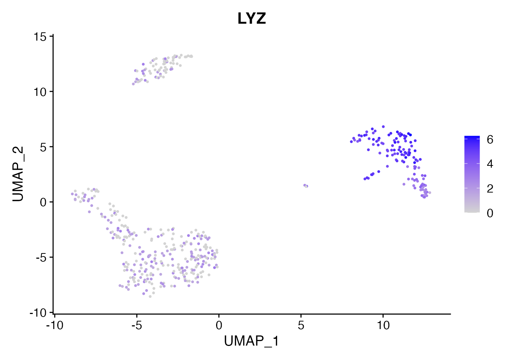
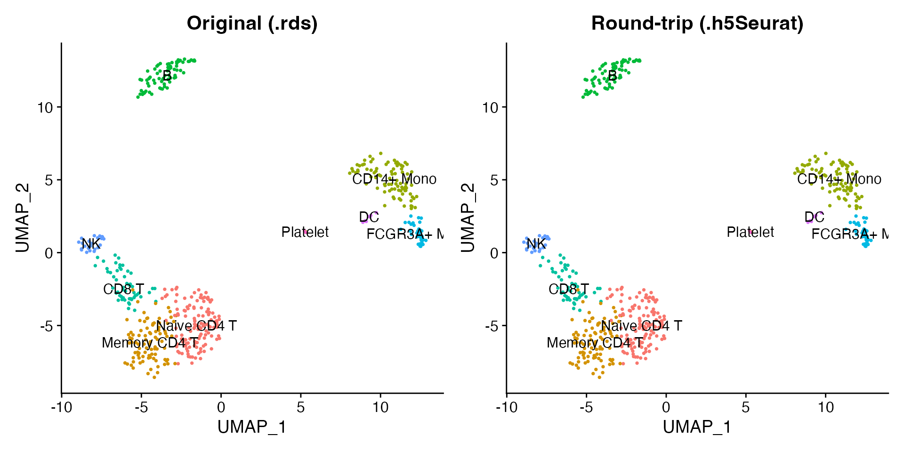
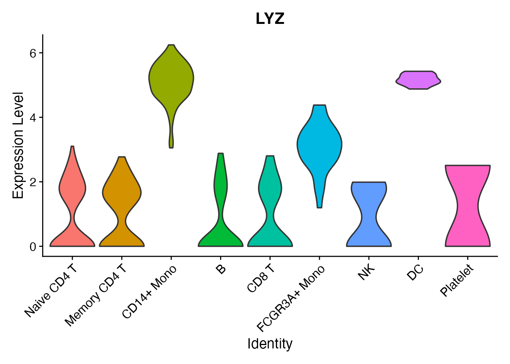

The h5Seurat format is an HDF5-based file format designed specifically for Seurat objects. It stores all assays, reductions, graphs, and metadata in a single file and supports selective loading so you can read only the components you need.
Read an h5Seurat file
scConvert ships a 500-cell PBMC dataset in h5Seurat format.
readH5Seurat() loads it directly into a fully functional
Seurat object.
h5seurat_file <- system.file("extdata", "pbmc_demo.h5seurat", package = "scConvert")
pbmc <- readH5Seurat(h5seurat_file)
pbmc
#> An object of class Seurat
#> 2000 features across 500 samples within 1 assay
#> Active assay: RNA (2000 features, 2000 variable features)
#> 2 layers present: counts, data
#> 2 dimensional reductions calculated: pca, umapThe loaded object contains all nine annotated cell types with PCA, UMAP, and neighbor graphs:
DimPlot(pbmc, reduction = "umap", group.by = "seurat_annotations",
label = TRUE, pt.size = 0.5) + NoLegend()
Expression data is fully available. LYZ is a monocyte marker:
FeaturePlot(pbmc, features = "LYZ", pt.size = 0.5)
Write a Seurat object to h5Seurat
writeH5Seurat() saves any Seurat object to h5Seurat
format, preserving all assays, dimensional reductions, graphs, and cell
metadata.
pbmc_seurat <- readRDS(system.file("extdata", "pbmc_demo.rds", package = "scConvert"))
h5seurat_path <- tempfile(fileext = ".h5Seurat")
writeH5Seurat(pbmc_seurat, filename = h5seurat_path, overwrite = TRUE)
cat("File size:", round(file.size(h5seurat_path) / 1e6, 1), "MB\n")
#> File size: 2.3 MBVerify the round-trip
Read the written file back and confirm that the UMAP coordinates, cluster labels, and expression values are identical to the original.
pbmc_rt <- readH5Seurat(h5seurat_path)
library(patchwork)
p1 <- DimPlot(pbmc_seurat, reduction = "umap", group.by = "seurat_annotations",
label = TRUE, pt.size = 0.5) + NoLegend() + ggtitle("Original (.rds)")
p2 <- DimPlot(pbmc_rt, reduction = "umap", group.by = "seurat_annotations",
label = TRUE, pt.size = 0.5) + NoLegend() + ggtitle("Round-trip (.h5Seurat)")
p1 + p2
Selective loading
For large datasets, you can load only what you need. This is useful when you have a multi-gigabyte h5Seurat file and only want to make a quick UMAP plot.
Load only the RNA assay with UMAP, skipping PCA and all graphs:
pbmc_light <- readH5Seurat(h5seurat_file, assays = "RNA",
reductions = "umap", graphs = FALSE)
pbmc_light
#> An object of class Seurat
#> 2000 features across 500 samples within 1 assay
#> Active assay: RNA (2000 features, 2000 variable features)
#> 2 layers present: counts, data
#> 1 dimensional reduction calculated: umapThe light object still supports visualization since UMAP coordinates are present:
DimPlot(pbmc_light, reduction = "umap", group.by = "seurat_annotations",
label = TRUE, pt.size = 0.5) + NoLegend()
Query file contents with scConnect()
Before loading any data, you can inspect what is stored in an
h5Seurat file using scConnect(). This opens a lightweight
connection and .index() summarizes the contents – which
assays, reductions, graphs, and images are available.
hfile <- scConnect(h5seurat_file)
hfile$index()
#> Data for assay RNA★ (default assay)
#> counts data scale.data
#> ✔ ✔ ✖
#> Dimensional reductions:
#> Embeddings Loadings Projected JackStraw
#> pca: ✔ ✔ ✖ ✖
#> umap: ✔ ✖ ✖ ✖
hfile$close_all()This is especially useful for large files where you want to decide what to load before committing memory.
Per-cluster expression
A violin plot shows the LYZ expression distribution across all nine cell types:

Clean up
unlink(h5seurat_path)